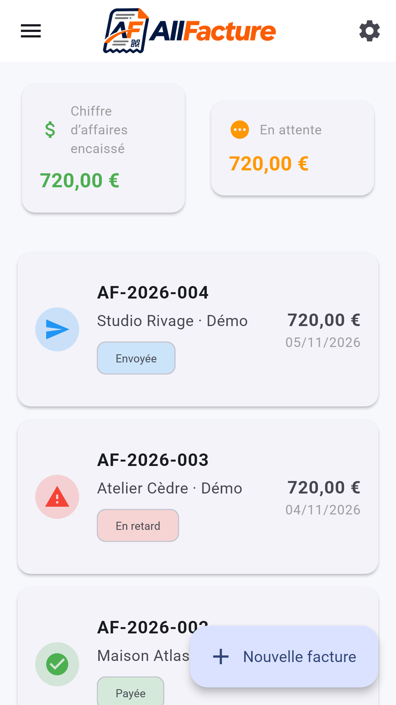
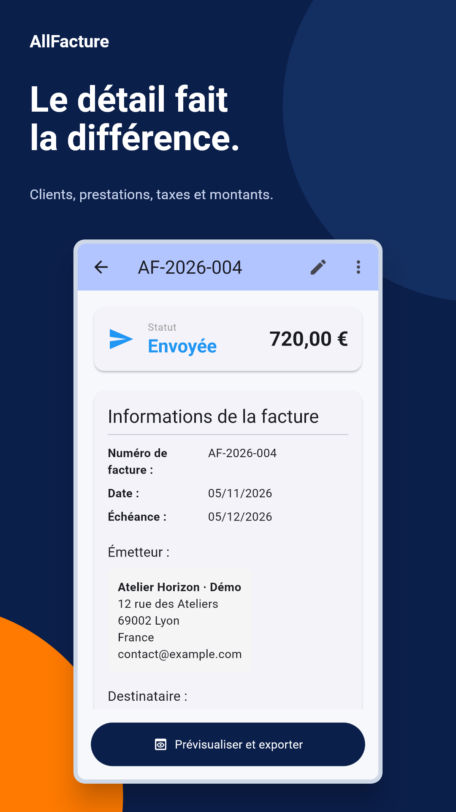
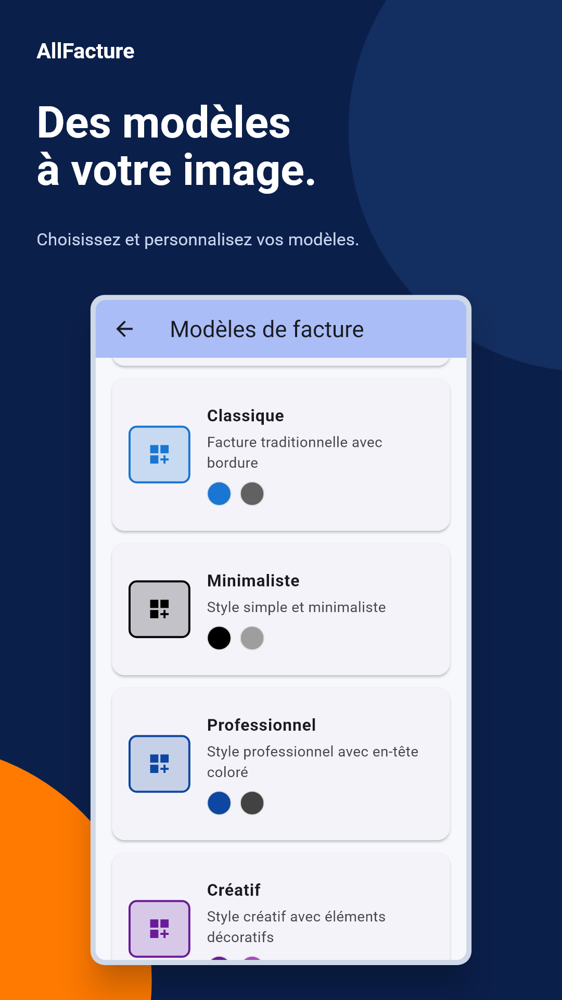
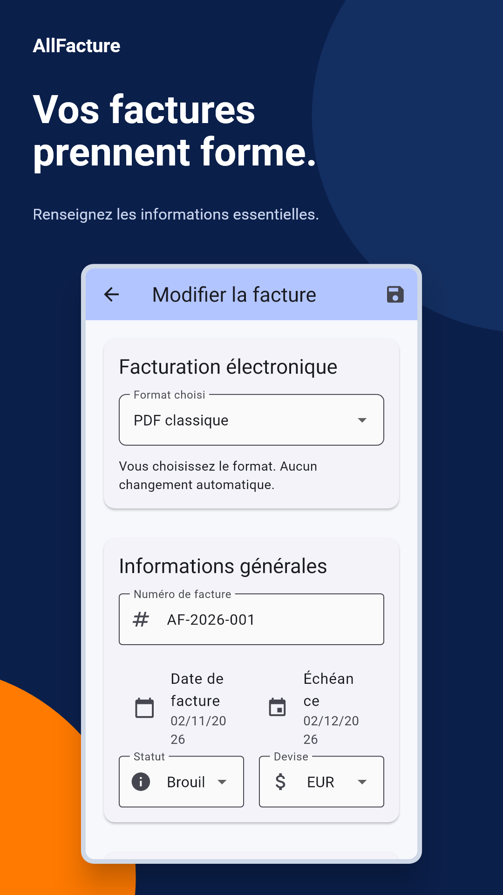

Retrouvez vos informations
Votre entreprise, vos clients et votre catalogue d’articles. Réutilisez les informations utiles au fil de vos factures.
Créez des factures à votre image, retrouvez vos clients et préparez vos documents PDF ou Factur-X depuis votre téléphone.
Application gratuite, financée par la publicité.

AllFacture rassemble les outils utiles à la préparation de vos factures. Vous gardez la main sur les informations et sur le suivi.
Votre entreprise, vos clients et votre catalogue d’articles. Réutilisez les informations utiles au fil de vos factures.
Choisissez un modèle, ajoutez votre logo et personnalisez la mise en page avec l’éditeur visuel.
Vérifiez l’aperçu, exportez le PDF, partagez-le via les applications de votre appareil ou imprimez-le.



Visuels issus de l’interface Flutter avec des données fictives. L’affichage peut varier selon l’appareil et la version.
Le format Factur-X associe un PDF lisible et des données XML embarquées. AllFacture permet de préparer cet export lorsque les informations requises sont renseignées.
AllFacture ne transmet pas vos factures aux administrations, aux plateformes agréées ou au réseau Peppol. Vérifiez les données et les obligations applicables à votre entreprise avant utilisation.
Par les publicités intégrées. Une offre facultative permet de regarder une publicité avec récompense pour obtenir 30 minutes sans bannières ni interstitiels sur l’appareil. Refuser cette offre ne bloque pas les fonctionnalités de facturation.
Les données sont enregistrées localement dans l’application. Il n’y a pas de synchronisation cloud intégrée entre appareils. Conservez vos PDF exportés et tenez compte des sauvegardes propres à votre système.
Vous mettez à jour vous-même les statuts : brouillon, envoyée, payée, en retard ou annulée. AllFacture ne réalise pas d’encaissement ni de rapprochement bancaire automatique.
L’interface propose le français, l’anglais et l’allemand. Une interface en arabe n’est pas incluse dans cette version.
La publication sur Google Play et l’App Store est en préparation. Les liens officiels seront ajoutés ici lorsque les fiches seront disponibles.